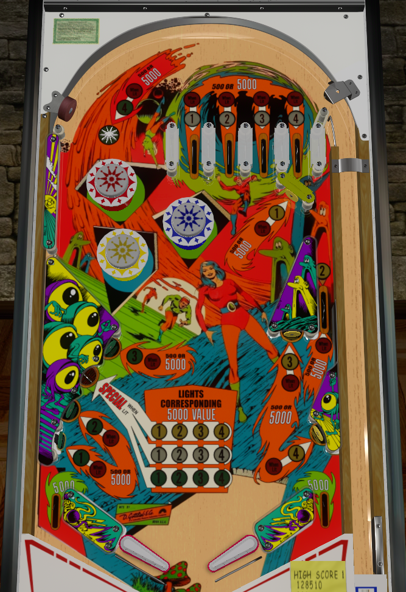

For points, collect the same number from all three places on the playfield (top lanes for white, lower left standup targets and star rollover for green, right standup targets and side lane for yellow). Collecting a set of a single number lights all features with that number for 5,000 points. For specials, collect sets of 1-2-3-4 in the same colour. The more sets completed, the more frequently the lower left saucer will be lit for special. Watch out for balls the speed straight to the right out lane from the bumpers, especially if they come out below-left of the lowest bumper.
Try to plunge any white top lane that is still light, i.e., its number has not yet been collected. If the four white numbers have all been collected, try to plunge the star rollover further left to get the green 4. If the top lanes and the green 4 have all been collected, the safest plunge is a short plunge into the white 4 lane, as this redirects into the yellow 2 side lane followed by a usually controllable feed to the right flipper. If both the 4s and 2s have been completed, this skillful short plunge scores 10,000 points.
All features labelled with a 1-2-3-4 are worth 500 points to start out. Hit a lit lane or target to collect that number. Collected numbers are shown in the center of the playfield. Collecting the same number in all three colours lights the features with that number red for 5,000 points for the rest of the game. Collecting 1-2-3-4 in a single colour increases how frequently the lower left saucer is lit for a Special. If all three colours have had their 1-2-3-4 completed, the saucer will always be lit. Lights on the saucer change every time a 100 point switch is scored.
The green 1-2-3 and the yellow 3-4 will usually be collected in the course of normal gameplay thanks in large part to the very shallow slingshot angles. Directly aiming for these targets is usually not advised. The best use of the flippers in the rare case where the ball is under control is to use the right flipper to shoot up to the top of the table are between the bumpers or entering a top lane from below, and use the left flipper to shoot the yellow 1 target if you still need it or the yellow 2 side lane from below if it is lit for 5,000 points.The more the ball is at the top of the table, the more numbers you will collect and points you will score, but after the plunge, it's very difficult to get the ball back up there.
In a 3-ball game, the 2 and 3 of each single colour are tied together, so that collecting either one gives credit for both. In a 5-ball game, all numbers must be collected separately.
Pop bumpers score 1,000 points in a 3-ball game and 100 points in a 5-ball game. If you do try to get back to the table by shooting up between the bumpers, be sure you can do so accurately, as both the lowest and rightmost bumpers are more than happy to center drain or right out lane drain on a missed shot. Also, beware the feed of any ball that exits the bumper area from below/left of the lowest bumper, as balls coming out from here are very likely to flop directly into the right out lane with no chance to nudge until it's far too late.
Strange World is no in lanes. The flippers back up directly to the slingshots. The slingshots are incredibly shallow, taking the same angle relative to the horizontal as a lowered flipper, meaning the ball has a very wide range of possible angles based on where it meets the slingshot and how hard it hits the slingshot. Ball control is fickle to say the least, and live catches or drop catches are rewarded well. Out lanes score 5,000 points.
There is no end of ball bonus or extra ball feature. Tilt generally ends game, not just the ball in play, so nudge wisely even though there are no end of ball bonus points to lose.